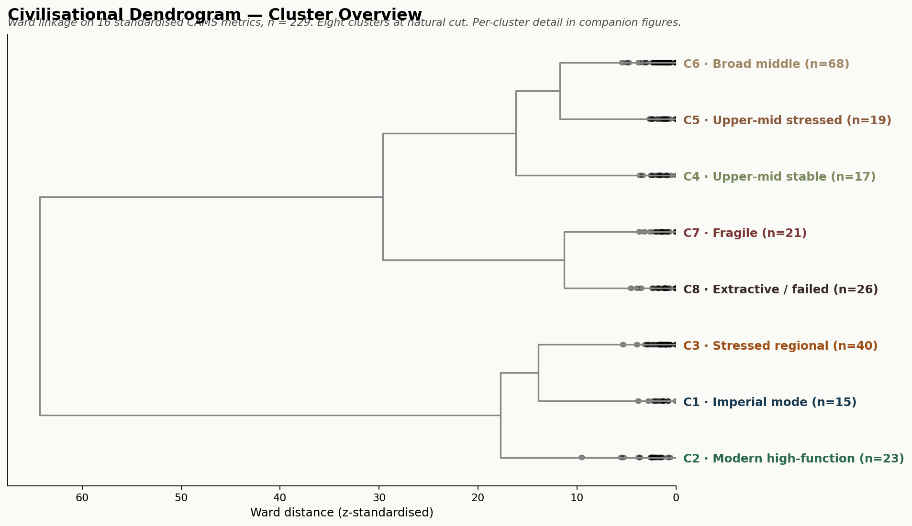
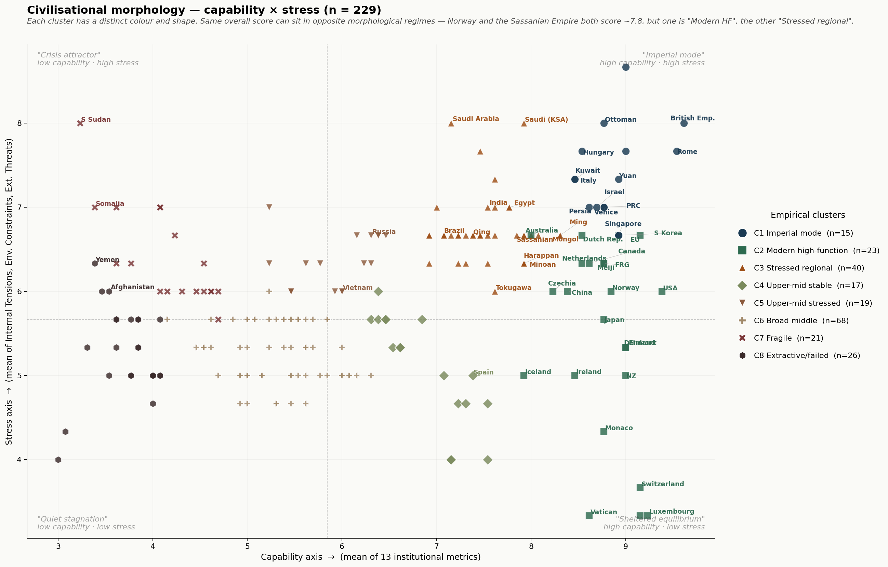
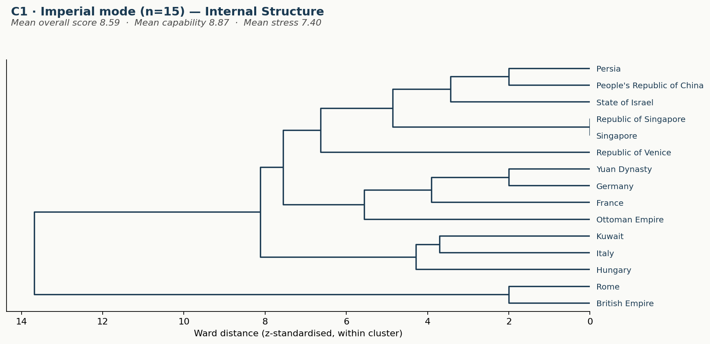
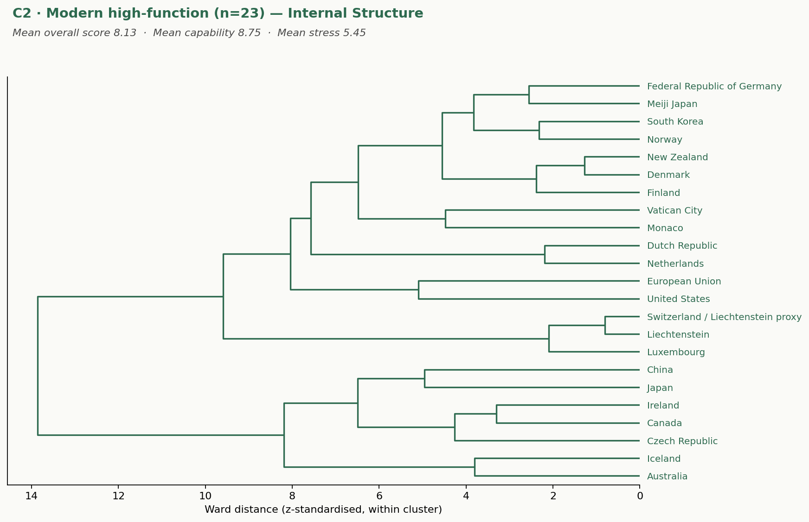
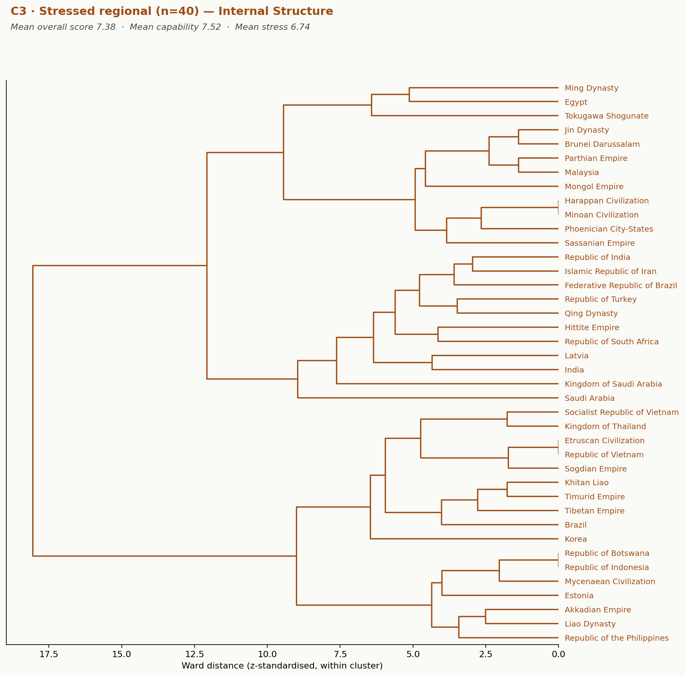
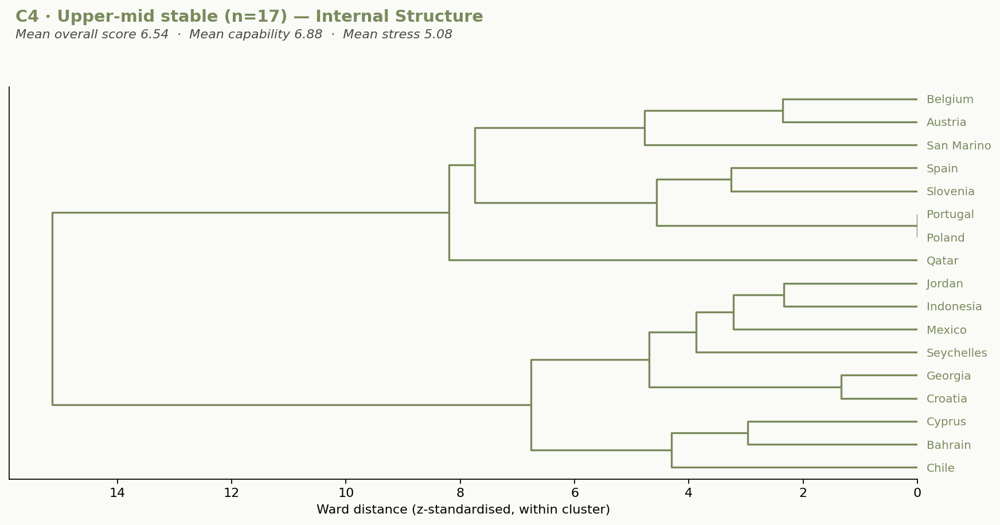
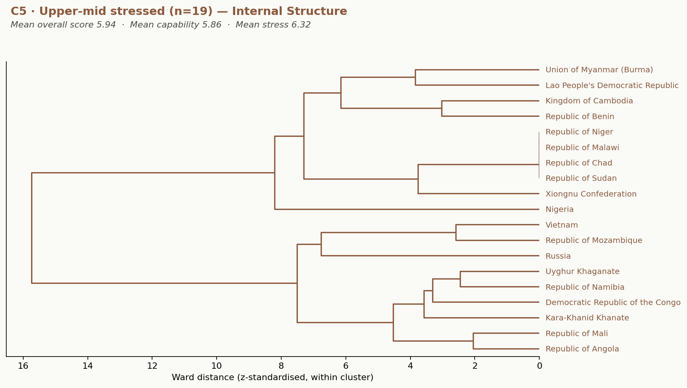
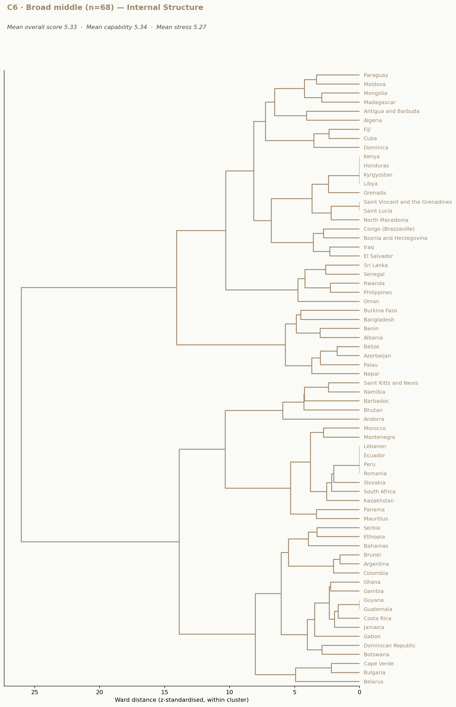
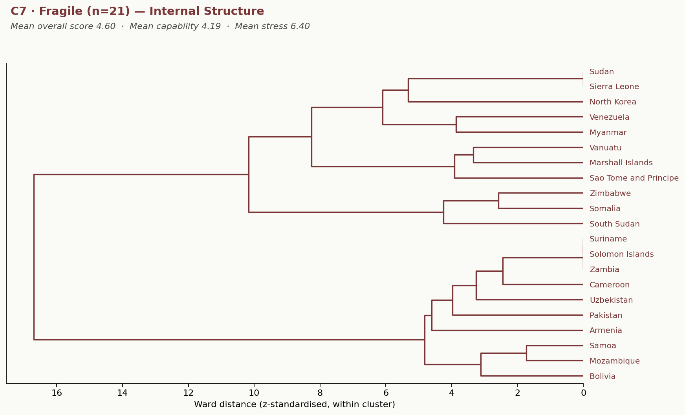
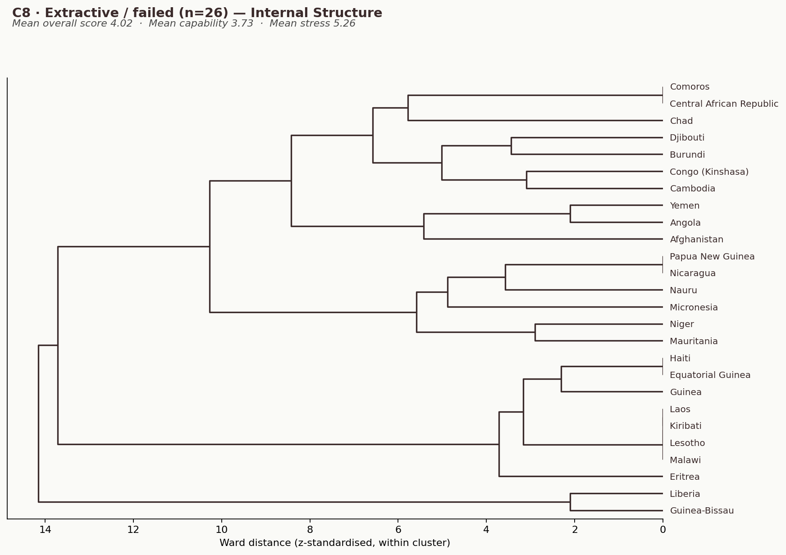

This paper proposes a formal taxonomy of social coordination architectures grounded in the Complex Adaptive Model State (CAMS) framework. The taxonomy is built from below rather than imposed from above. It begins with the eight recurring coordination problems that any sufficiently differentiated Holocene human society must solve, identifies how geography makes some of these problems acute and others latent, and shows how local solutions accumulate into path-locked institutional architectures.
The eight CAMS nodes — Helm, Shield, Lore, Stewards, Craft, Hands, Archive, Flow — are warranted as the minimal functional decomposition at which the recurring coordination problems become surveyable: not as an arbitrary social-science taxonomy but as one node per recurring problem. Empirical clustering across 229 polities recovers eight stable groupings without geographic priors, including durable structural similarities between Rome, the Ottoman Empire, the Yuan Dynasty, the British Empire, and the People's Republic of China.
The taxonomy is offered as evidence that coordination architecture, not regime type or development stage, is the relevant axis along which human meta-systems differ.
1. Introduction
The taxonomic question in social science has been treated, for several decades, as a methodological liability. To classify societies risked reifying ideological categories — modern and traditional, Western and non-Western, advanced and primitive — that revealed more about the classifier than about the classified. The discipline retreated, for good reasons, towards either case-specific historical analysis or universal-mechanism theorising, leaving comparative typology to a small literature whose ambitions outran its evidentiary base.
This retreat has costs. Without a taxonomy, claims about why some societies persist while others collapse, why coordination problems recur in similar forms across millennia, or why institutional configurations cluster in geographically interpretable ways, all remain narrative. They cannot be falsified, replicated, or aggregated.
The argument of this paper is that the taxonomic question can now be answered formally and falsifiably, provided it is framed correctly. The wrong starting point is types of society, which immediately invites ideological framing. The right starting point is types of coordination problem, which are imposed by ecology and scale rather than chosen by analysts.
If we can identify the recurring coordination problems that Holocene human societies face, observe that geography makes some of those problems acute in particular regions, watch how local solutions accumulate into institutional architectures, and demonstrate that the resulting architectures cluster empirically — then the taxonomy follows from the evidence rather than being projected onto it.
This paper makes that argument in seven steps. Section 2 sets out the eight recurring coordination problems. Section 3 shows how geography poses these problems differentially across ecological zones. Section 4 introduces the path-dependency claim that turns local solutions into civilisational architectures. Section 5 warrants the eight-node CAMS grammar as the minimal functional decomposition at which the coordination problems become surveyable. Section 6 presents the empirical taxonomy that emerges from hierarchical clustering across 229 polities. Section 7 discusses the placements that resist conventional framings of the United States, the People's Republic of China, and the Russian Federation. Section 8 sets out falsifiability conditions.
2. The Eight Recurring Coordination Problems
A useful taxonomy of human meta-systems begins with the problems they all have to solve. The following eight have been recurrently distinguishable in differentiated Holocene societies. They are stable across scale, technology, and historical era because each corresponds to a functional pressure that does not disappear when its current institutional solution is replaced by another.
Who decides when futures are uncertain and consensus is too slow? Solved by chief, council, constitutional executive, or algorithm — but it must be solved.
How is the system protected from external predation, internal violence, and definitional dissolution? The problem of selective porosity — what gets in, who stays in, what stays out.
What gives the system coherent sense to its members? What turns a collection of individuals into an us who can sustain coordinated action across generations?
Who owns what, who gets what, and by what rule? This becomes acute once surplus exists — involving property, rents, taxes, and obligations across generations.
How is technical knowledge — agricultural, metallurgical, navigational, medical — preserved across generations? Technique is fragile: a society that cannot reproduce its technical base loses capacity within a generation.
How is the population that does the work reproduced — not only biologically but institutionally? Distinct from technical reproduction: who learns to be a farmer, a soldier, a nurse?
How is precedent stored, retrieved, and applied to current decisions? Without an answer, every generation rediscovers the same lessons by paying the same costs.
How do goods, information, persons, and services move within and across the system's boundary? Not the same as production — it is the moving of what is produced to where it is wanted.
The Yuan Dynasty, the Ottoman Empire, and the Republic of Venice all solved the eight problems; their solutions diverged radically; the problems were the same. Taking the problems as primary and the institutions as derivative is the move that makes a non-ideological taxonomy possible.
3. Geography as Problem-Poser
Geography does not determine social outcomes. It does, however, determine which of the eight coordination problems are acute in a given environment and which are latent. Different ecological zones therefore select for different relative weightings of the institutional solution-set, and over centuries those weightings accumulate into recognisable civilisational morphologies.
🌊 Riverine
Annual flooding cycles require multi-year planning, water-rights adjudication, and granary management. Egypt, Mesopotamia, early China → Stewards–Archive primacy.
⚓ Maritime trade
Trade networks reward fast-loop adaptation. Phoenicia, Athens, Italian maritime republics, the Hanseatic League, Dutch Republic → Flow–Helm primacy.
🏔 Continental
Without natural barriers, defence is everywhere present. Achaemenid, Mongol, Russian Empire, and the Russian Federation → Shield–Helm primacy.
🗻 Mountain
Vertical production zones and small populations require internal cohesion. Inca, Tibetan, Andean polities → Stewards–Lore primacy.
🐎 Steppe & pastoral
Mobile populations, constant military pressure, Archive structurally weak. Mongol, Turkic, Scythian, pre-imperial Arabian → Shield–Flow primacy.
🏝 Insular
Boundary maintenance trivial; external interface concentrated. Tokugawa Japan, pre-industrial Britain → Archive–Flow signatures.
These are tendencies, not laws. The point is not that geography assigns morphology deterministically; the point is that geography poses problems differentially, and differential problem-pressure selects for differential institutional weighting.
4. Path Dependency: How Local Solutions Become Civilisational Architectures
Once a configuration succeeds at solving the local problem-set well enough to produce surplus and reproduce itself across generations, three mechanisms drive its consolidation into a civilisational architecture.
Capacity accumulation. Each generation that operates the configuration improves the institutional capacity associated with the privileged nodes. The accumulated capacity becomes a sunk asset that is costly to discard.
Bond strength formation. The functional links between nodes accumulate operating routines that are not separately specified but emerge from repeated use. A society can in principle copy another's institutions but it cannot copy their bond structure, which is the residue of generations of working interaction.
Solution-by-extension. New problems get addressed using the existing architecture rather than by reorganising it. Each successful application reinforces the architecture's status as the default way of solving problems.
Modern Türkiye is not the Ottoman Empire, but its coordination signature is recognisably continuous with it. The Russian Federation is not the Soviet Union, which was not the Russian Empire, but the continental-extractive morphology is recognisable across all three. The PRC is not the Qing Dynasty, which was not the Ming, but the riverine-bureaucratic-imperial signature is shared. A polity can change its formal political system, its dominant ideology, even its religion, and remain in the same coordination morphology.
5. The Eight-Node Grammar: Why Eight?
The CAMS framework decomposes institutional architecture into eight functional nodes. The mapping between nodes and coordination problems is exact — one node per problem:
5.1 Functional non-redundancy
The eight problems are not reducible to fewer. Memory and meaning are different problems. Allocation and labour-reproduction are different. Technical reproduction is not the same as labour reproduction. Circulation is not the same as direction. A six-node decomposition that collapses any of these distinctions loses analytical resolution at points where the empirical clusters demonstrably differ.
5.2 Empirical surveyability
At the eight-node resolution, scoring can be performed against historical evidence with reasonable inter-rater reliability. The CAMNATIONS5 USA panel reports ICC(2,k) = 0.973 across five independent scorers. At twelve nodes, surveyability degrades sharply for pre-modern polities because the requisite documentary evidence does not exist at that resolution.
5.3 Cross-period applicability
The eight nodes are present in some form in all sufficiently differentiated Holocene polities — from chiefdoms through early states to modern industrial polities. The eight-node grammar is the highest-resolution decomposition that retains cross-period applicability.
5.4 Empirical recovery
The strongest warrant for the eight-node grammar is that it recovers structure under empirical clustering that was not directly encoded in the metrics. If the eight-node grammar were arbitrary, the clustering would not produce historically interpretable groupings — it would produce statistical artefacts.
5.5 Slow loop and fast loop
The eight nodes partition into two timescale regimes. Archive, Lore, and Stewards form the slow loop (decades to centuries). Helm, Shield, Flow, Hands, and Craft form the fast loop (months to years). Many civilisational transitions occur not when all nodes weaken simultaneously but when slow-loop coherence and fast-loop reaction decouple.
6. The Empirical Taxonomy
A corpus of 229 polities — modern states, historical empires, classical city-states, indigenous confederations, and stateless polities — was scored across sixteen dimensions aligned with the four CAMS metrics applied across the eight nodes. Ward's hierarchical clustering on z-standardised features produced eight stable clusters at the natural cut-height. No geographic, ideological, or chronological priors were supplied to the algorithm.
6.1 The eight clusters
| Cluster | Label | n | Score | Stress | Character |
|---|---|---|---|---|---|
| C1 | Imperial mode | 15 | 8.59 | 7.40 | High capability under sustained high stress |
| C2 | Modern high-function | 23 | 8.13 | 5.45 | High capability under moderate stress |
| C3 | Stressed regional | 40 | 7.38 | 6.74 | High-moderate capability under sustained pressure |
| C4 | Upper-mid stable | 17 | 6.54 | 5.08 | Established middle tier, moderate-stress conditions |
| C5 | Upper-mid stressed | 19 | 5.94 | 6.32 | Middle tier under elevated pressure |
| C6 | Broad middle | 68 | 5.33 | 5.27 | Functional but constrained — the modal world |
| C7 | Fragile | 21 | 4.60 | 6.40 | Eroding capacity under elevated pressure |
| C8 | Extractive / failed | 26 | 4.02 | 5.26 | Coordination collapse |

View full size ↗
View full size ↗6.2 The apex split
The most consequential structural finding is that what appears in raw scoring as a single apex tier resolves under clustering into two genuinely distinct ecological regimes — Imperial mode (C1) and Modern high-function (C2). They have nearly identical capability scores but differ sharply on stress signature.
This is not a difference of regime type or development stage. It is a difference of which coordination problems are currently dominant. Imperial-mode polities are stress-processing systems first. Modern high-function polities are coordination-and-legitimacy systems first. Each has a characteristic failure mode: Imperial mode fails through phantom collapse (Rome, 200–450 CE); Modern high-function fails through bond-strength erosion and sectoral decoupling.
6.3 Geographic recovery
The cluster algorithm does not separate riverine from maritime morphologies into different clusters because their static institutional metrics overlap. The morphological distinction lives in the pattern of node weightings within the cluster rather than in cluster membership. Static-metric clustering identifies coordination regimes (capability × stress); within-cluster analysis identifies coordination morphologies (which nodes carry the architecture). Both levels are required.
7. Placements That Resist Conventional Framings
Three placements warrant explicit comment because they cut against routine Western framings of contemporary geopolitics.
The People's Republic of China — Cluster C1 (Imperial mode)
The PRC clusters with Rome, the British Empire, the Ottoman Empire, France, Germany, Yuan, Persia, and Venice. This is a structural finding, not an ideological one. It places the PRC within the empire-shaped coordination lineage that includes the Western polities themselves. Framings of the PRC as a categorically other or uniquely opaque type of system do not survive structural inspection. The PRC is operating in the same ecological regime that European empires operated in during their high-capability phases, with similar institutional architecture and similar dynamic risks.
The United States — Cluster C2 (Modern high-function)
The US clusters with Japan, South Korea, Germany, the EU, Canada, Australia, and the Nordics. Its capability score is the highest in the corpus (9.4) but its stress signature (6.0) is moderate by C1 standards. American foreign-policy rhetoric routinely implies imperial-mode operation, but the structural signature is closer to Japan and Germany than to Rome and Britain. Whether this represents structural evolution beyond imperial mode, or simply that the relevant internal stresses have not yet pushed the signature into C1, is an open dynamical question.
The Russian Federation — Cluster C5 (Upper-mid stressed)
The Russian Federation clusters in C5, with capability around 6.3 and stress around 6.7. This places it structurally alongside Mexico, Croatia, Bahrain, Cyprus, and Jordan. It is neither a uniquely threatening actor nor a uniquely capable one. It is a stressed upper-middle polity processing the Ukraine war, comprehensive sanctions, the ageing of its administrative infrastructure, and unresolved transition from the Soviet period. The data support this reading without recourse to either Russophobic or revanchist framings.
These placements are not normative claims. They are what falls out of standard hierarchical clustering applied to standardised metrics. A taxonomy that recovered conventional Western political categories would be of less analytical value than one that recovers structural similarities cutting across them.
8. Falsifiability of the Taxonomic Claim
A taxonomy without falsifiability conditions is description, not science. The following seven criteria define the next stage of empirical testing.
- Cluster Stability Test. Independent researchers applying the published scoring protocol to the same corpus should recover clusters with adjusted Rand index ≥ 0.65.
- Out-of-Sample Assignment Test. Polities not used in development — including pre-modern non-Eurasian polities and contemporary subnational entities — should be assignable to the eight clusters without new clusters being required.
- Cross-Method Recovery Test. Alternative clustering methods (k-means, DBSCAN, average-linkage, community detection on a similarity network) should recover qualitatively similar groupings.
- Apex-Split Robustness Test. The C1/C2 split should survive (a) removal of any single distinguishing metric, (b) decoupled scoring of stress dimensions from independent evidence streams, and (c) variation in standardisation method.
- Coordination-Problem Recovery Test. Within-cluster variation should be interpretable as differential weighting on the eight problems. Pre-registered predictions (riverine → Stewards + Archive; maritime → Flow + Helm; continental → Shield + Helm) should be recoverable from cluster sub-structure.
- Geographic Sub-Structure Test. Morphological types should be recoverable as sub-structure within larger clusters without geographic labels supplied to the recovery procedure.
- Trajectory Coherence Test. Time-series analysis of polities at cluster boundaries should show coherent trajectories rather than random fluctuation.
These criteria are deliberately demanding. The taxonomy should fail at least some of them if it is mistaken in any non-trivial respect.
9. Conclusion
The eight clusters this paper presents are not a ranking. They are morphologies — configurations of the same underlying coordination grammar, differentiated by capability level, stress regime, and the relative weighting of slow-loop and fast-loop nodes that geography and history have produced.
The argument has run from the bottom up. Eight recurring coordination problems are imposed on Holocene human societies by ecology and scale. Geography makes some of these problems acute and others latent, selecting for differential institutional weightings. Local solutions accumulate, through capacity formation, bond-strength accretion, and solution-by-extension, into morphologically locked-in architectures whose persistence outlasts the political regimes that operate them.
The eight-node CAMS grammar is the minimal functional decomposition at which these architectures become surveyable. Its warrant is empirical, lying in the structure that hierarchical clustering recovers without geographic priors. The eight clusters — Imperial, Modern High-Function, Stressed Regional, Upper-Mid Stable, Upper-Mid Stressed, Broad Middle, Fragile, Extractive — are the empirical record of how human societies have actually configured themselves.
Despite morphological differences, all polities share the same physical envelope. The eight coordination problems are imposed, in the end, by the same physics: energy throughput is finite, entropy production is unavoidable, information has acquisition costs, climate forcing is system-wide. These constraints do not respect coordination morphology. The morphological diversity the taxonomy reveals is the human species' adaptive repertoire under shared constraints — not a contest between rival civilisational projects with winners and losers. The common interest lies in maintaining the global niche-construction substrate that supports any high-coordination polity at all.
The datasets, scoring protocols, dendrograms, and reproducible code are publicly available at neuralnations.org and github.com/KaliBond/wintermute. Researchers are invited to replicate, extend, and challenge these results.
Appendix · Per-Cluster Internal Dendrograms
The following figures show the internal Ward-linkage structure within each of the eight empirical clusters. Ward distance is z-standardised within each cluster.

View full size ↗Mean overall score 8.59 · Mean capability 8.87 · Mean stress 7.40

View full size ↗Mean overall score 8.13 · Mean capability 8.75 · Mean stress 5.45

View full size ↗Mean overall score 7.38 · Mean capability 7.52 · Mean stress 6.74

View full size ↗Mean overall score 6.54 · Mean capability 6.88 · Mean stress 5.08

View full size ↗Mean overall score 5.94 · Mean capability 5.86 · Mean stress 6.32

View full size ↗Mean overall score 5.33 · Mean capability 5.34 · Mean stress 5.27

View full size ↗Mean overall score 4.60 · Mean capability 4.19 · Mean stress 6.40

View full size ↗Mean overall score 4.02 · Mean capability 3.73 · Mean stress 5.26
References
- Prigogine, I. & Stengers, I. (1984). Order Out of Chaos: Man's New Dialogue with Nature. Bantam Books.
- Laland, K.N. et al. (2015). The extended evolutionary synthesis: its structure, assumptions and predictions. Proceedings of the Royal Society B, 282(1813), 20151019.
- Tainter, J.A. (1988). The Collapse of Complex Societies. Cambridge University Press.
- Boyd, R. & Richerson, P.J. (1985). Culture and the Evolutionary Process. University of Chicago Press.
- Odling-Smee, F.J., Laland, K.N. & Feldman, M.W. (2003). Niche Construction: The Neglected Process in Evolution. Princeton University Press.
- Turchin, P. (2003). Historical Dynamics: Why States Rise and Fall. Princeton University Press.
- McKern, K.F. (2026). Paper 1: The Complex Adaptive Meta-System. NeuralNations Working Papers.
- McKern, K.F. (2026). Paper 2: A Natural Taxonomy of Meta-Systems. NeuralNations Working Papers.
- McKern, K.F. (2026). CAMS Extended Social Cognition Hypothesis (ESCH). NeuralNations Technical Notes.
- McKern, K.F. (2026). CAMS v3.2-R: Retrospective Validation and Criticality Recalibration. NeuralNations Technical Notes.
- McKern, K.F. (2026). CAMNATIONS5 USA 1996–2026 Pipeline Validation. NeuralNations Technical Notes.
- McKern, K.F. (2026). The Library Attractor: A Formal Operator of Civilisational Path Dependency. NeuralNations Technical Notes.
- Pierson, P. (2000). Increasing returns, path dependence, and the study of politics. American Political Science Review, 94(2), 251–267.